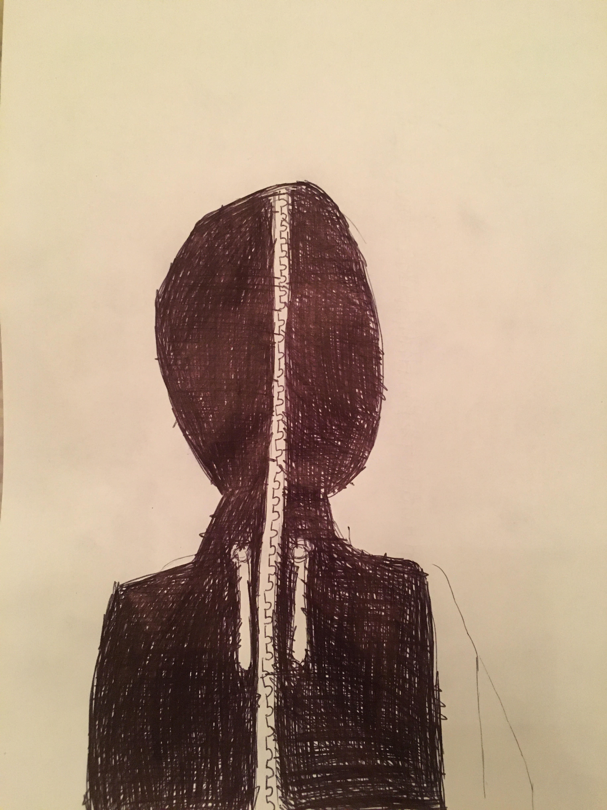

October 24th, 2019
Today I finished my person card and started my coding journal.
October 24th, 2019
Today I finished my person card and started my coding journal.
November 20th, 2019
Today I worked on my ocean game which teaches kids about trash underwater.
December 11th, 2019
Today I added my amazing room to my webpage!
December 19th, 2019
Today I added my function to my webpage!
December 19th, 2019
Today I added my fizzbuzz project to my webpage!
January 7th, 2020
Today I worked on a Martha's Vineyard Guide! I added boxes that represent each town with images, and will link each to a page with info about that town!
February 3rd, 2020
Today I tried to make a function to create a for loop and add my homework to my webpage but it wasn't working. I'm going to ask Molly about it in class tomorrow!
February 5th, 2020
Today I created the foor loop for my butterfly page and got the butterflies to move!
April 2nd, 2020
Everyone has been out of school for Spring Break and because of the Coronavirus, so I haven't added to my coding journal in awhile. Here is my article of clothing that would create invisibilty for the user. This is an all black sweatshirt with a zipper that goes all the way up the hood so that your face is covered, but has tiny wholes so the user is able to see. I also added my valentine and Martha's Vineyard page to my website.
